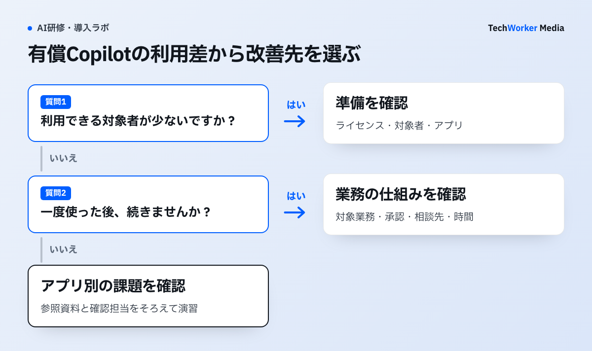

Copilotの利用レポートは、何を確認してから読めばよいですか？
最初に、そのレポートが誰を測っているかを確認します。母集団が違えば、数字は比べられません。
利用レポートを開いても、研修内容は自動では決まりません。確認するのは、ライセンス保有者、Copilot Chat利用者、エージェント利用のどれを測っているかです。母集団を混ぜると、研修後の利用増減を誤って評価します。
- Microsoft 365 Copilot usage reportは、ライセンスが有効な利用者が対象です。示す指標は、対象者数（Enabled Users）、利用者数（Active Users）、アプリ別利用です。Copilot Chatへの指示数なども示します[1]。
- Microsoft Copilot Chat usageは、Copilotライセンスを持たない利用者のChat利用が対象です。7、28、90、180日の傾向を扱います[2]。
同じ「Copilot」という名前でも、母集団と指標が違います。
利用レポートは、どんな手順で研修課題に変えますか？
対象の固定、三層の分解、アプリ別の確認、前後の比較、月次レビューの5つの手順です。

Wordの下書き利用が弱い部署なら、参加者のライセンス、参照資料へのアクセス、初稿の確認担当を順に確かめます。準備が整っている場合に、自部門の文書で短い演習を作ります。無料Chatの入口分析は、別の母集団として記録します。
手順1：レポートの対象を固定します。研修レポートの冒頭に、製品、対象ライセンス、対象期間、タイムゾーン、データ遅延、匿名化設定を記載します。CSVへ出しても、この定義を残さないと、翌月に比較できません。
手順2：有効化・利用・継続の三層に分けます。次の三層で見ます。
- 有効化：利用可能な対象者数。
- 利用：対象期間に少なくとも一度使った人・機能。
- 継続：複数週で習慣として使っているか。
MicrosoftのCopilot adoption reportは、2つの値を用います。週あたり行動数と、過去12週での利用週数です。活発に使う層（power）、継続して使う層（habitual）、使い始めの層（novice）などを区別します[3]。研修優先度を考える参考になります。Microsoftが示す閾値を、自社の成果目標として無条件に転用しません。
手順3：アプリ別行動を、研修課題に変えます。Word、Teams、Outlook、PowerPointなどの利用差は、人気ランキングにしません。業務で本来使うアプリと、実際の利用の差を、部門ごとに確認します。
利用が弱い部門には、実際の入力・参照・確認を含む短い演習を作ります。利用が強い部門には、成功例だけでなく、差戻し、誤り、利用しなかった場面を聞きます。活発に使う利用者を講師にする場合は、その人の業務権限や経験が、他部門で再現できるかを確認します。
手順4：研修前後は、同じ定義で比較します。研修前4週と研修後4週のように、同じ曜日構成を取ります。ライセンス追加・組織変更・大型イベントは注記します。全社合計だけでなく、対象部門、対象アプリ、利用層に分けます。
成果指標（KPI）は、利用率だけにしません。課題完了、原資料確認、相談・差戻し、禁止データ入力、承認プロセスまで含めます。関連する研修効果測定とCopilot研修費用も参照してください。
手順5：月次レビューで、項目を固定します。毎月、次の項目を同じ書式で残します。対象レポート、対象となるライセンス保有者の範囲、集計期間、遅延、組織変更、研修対象、次に直す一つの業務行動です。
利用レポートを読むとき、どんな失敗が起きやすいですか？
母集団を混ぜる、翌日の数字で判断する、利用ログだけで成果を断定するの3つが代表的です。
- 研修翌日の数字で、成否を決める。2026年時点のMicrosoft文書では、日次活動はUTCでその日が終了してから、通常48時間以内に反映されます[1][2]。
- 一度触っただけの利用を、定着とみなす。Active Users Rateは、利用可能な人のうち実際に使った比率です。一度触っただけでも、activeに含まれる場合があります。
- 利用が増えただけで、成功とする。利用が増えても、確認漏れが増えれば、研修成功とは言えません。
- 数字が動かないとき、追加研修だけを答えにする。受講者の理解不足、環境未整備、業務対象の不一致を分けて見ます。
- 利用ログだけで、投資に対する効果（ROI）を断定する。利用ログは「何を使ったか」を示します。「正しい業務で価値が出たか」は示しません。
Teams要約は使われているが、Wordの下書きが使われていない場合は、プロンプト研修だけが答えではありません。参照資料、機密情報の扱い、レビュー責任が障害かもしれません。
利用ログだけでは、成果物の品質、時間削減、売上、従業員体験の因果を証明できません。匿名化設定や管理者権限、製品更新で取得できる項目が変わります。最新のMicrosoft文書と、自社テナントの表示を確認します。
MicrosoftはCopilot Analyticsを、用途で3つに分けています。導入準備（readiness）、利用状況（adoption）、業務への効果（impact）です。管理センターの運用レポートと、Viva Insightsの分析も、使い分けています[4]。
有効化・利用・継続の三層は、低いときにどう動けばよいですか？
有効化が低ければ準備、継続しなければ業務の仕組み、偏りがあればアプリ別研修を見直します。
| 層 | 見るもの | 低いとき・偏るときの動き |
|---|---|---|
| 有効化 | 利用可能な対象者数 | 研修より先に、ライセンス、対象者、アプリ準備を確認する |
| 利用 | 対象期間に少なくとも一度使った人・機能 | 一度触っただけでも含まれる場合があるため、継続と合わせて見る |
| 継続 | 複数週で習慣として使っているか | 続かないなら、業務シナリオ、上司の承認、相談窓口、時間確保を見直す。一部機能に偏るなら、アプリ別研修へ進む |
出典：Microsoft公式ドキュメント（確認日は記事末尾の一次情報を参照）。
よくある質問
そのレポートが何を測っているかです。ライセンス保有者、Copilot Chat利用者、エージェント利用のどれかで、母集団が違います。製品、対象ライセンス、期間、タイムゾーン、データ遅延、匿名化設定を、冒頭に記載します。
追加研修が自動的な答えではありません。有効化が低いなら、ライセンスや対象者、アプリ準備を確認します。利用が続かないなら、業務シナリオ、上司の承認、相談窓口、時間確保を見直します。
研修前4週と研修後4週のように、同じ曜日構成で取ります。ライセンス追加や組織変更などを注記します。全社合計だけでなく、部門、アプリ、利用層に分け、課題完了や確認漏れも指標に含めます。
次の一歩は何から始めればよいですか？
使うレポートの対象と期間を、1枚に書き出します。そこから、三層の現在地を確認します。
- 使うレポートの製品、対象ライセンス、期間、遅延を書き出します。
- 有効化・利用・継続の三層で、現在地を確認します。
- 研修前後に比べる期間と指標を、先に決めます。
一次情報と確認範囲（出典）
2026年10月3日再確認：MicrosoftのCopilot Chat利用レポートと、有償ライセンス向けCopilot利用レポートの対象者、集計期間、通常48時間の反映条件。その他の資料の確認日は、従来の記載のままです。
確認日：2026年9月18日。製品仕様・制度は更新されるため、導入時はリンク先の最新版を再確認してください。海外の制度・職業規範は日本へ直接適用せず、相違点と限界を本文に明記しています。